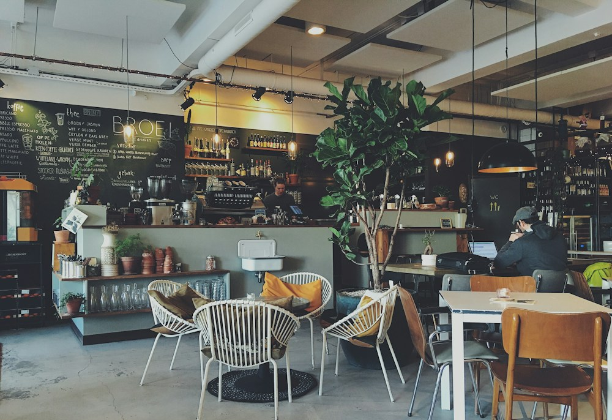

Хорошая еда.
Хороший день.
Завтрак подольше, кофе погорячее.
И время для тех, кто рядом.
в большом Бишкеке Эркиндик, 35
До вкусного —
пара сообщений.
Без регистрации и лишних звонков.
- 1
Выберите своё
Добавьте блюда в корзину.
Не забудьте про десерт. - 2
Как вам удобно?
Заберите по пути или
укажите адрес доставки. - 3
Откройте WhatsApp
Мы уже собрали всё в сообщение.
Останется только отправить.

Место для ваших маленьких традицийМожно просто
побыть здесь.
С книгой, с друзьями, с ноутбуком. Или просто с чашкой кофе и видом на город.
Мы придумали «Лист» как место, где обычный день становится чуть приятнее. Понятная еда, много зелени и столик, за которым хорошо.
Встретимся
на Эркиндик.
Пара шагов от городской суеты.
Кстати, если вы хотели спросить
Как работает заказ через WhatsApp?
Выберите блюда, откройте корзину и укажите способ получения. Сайт составит сообщение с блюдами, количеством, стоимостью и вашим комментарием. В этой демонстрации можно посмотреть и скопировать заказ или открыть WhatsApp без заранее выбранного получателя.
Какие условия доставки?
В примере доставка стоит 150 сом, а при заказе от 1 800 сом — бесплатно. Самовывоз бесплатный. Это демонстрационные условия: реальные сроки и зону доставки подтверждает кафе.
Есть ли блюда без мяса?
Да! Включите фильтр «Только вегетарианское» над меню. Нажмите на блюдо, чтобы посмотреть состав и аллергены. Вегетарианские блюда могут содержать яйца и молочные продукты.
Можно забронировать столик?
Нажмите «Забронировать стол», выберите дату, время и количество гостей. Сайт подготовит заявку. В демонстрационной версии фактическая бронь не создаётся.